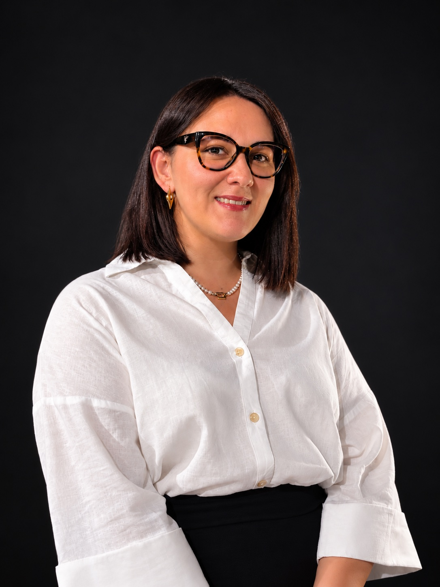
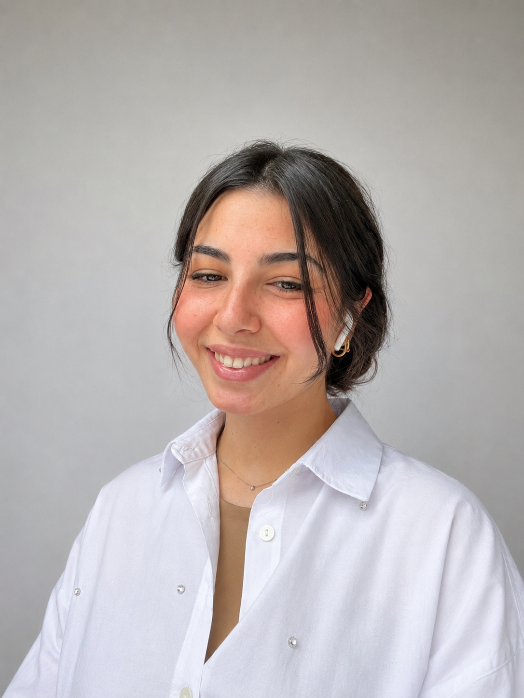

Sense
Integrated and distributed sensing, flexible electronics, biomaterials, context awareness, and methods for capturing human activity or environmental change.
MUM 2026 Workshop · Glasgow, UK
Computational Materials for Mobile and Ubiquitous Interaction — bringing together HCI, materials science, embedded AI, design, biomedicine, and engineering.
The premise
Materials are no longer passive substrates. They can sense, interpret, adapt, and communicate — becoming computational media in their own right.
WMT 2026 explores what becomes possible when material properties, sensing, embedded intelligence, actuation, and human interaction are designed as one system. Through challenge-based discussion, the workshop will connect communities that too often approach these questions separately and establish a shared interdisciplinary research agenda.
Four perspectives
Integrated and distributed sensing, flexible electronics, biomaterials, context awareness, and methods for capturing human activity or environmental change.
Edge AI, TinyML, embedded intelligence, local inference, distributed computing, and resource-aware learning within material systems.
Actuation, shape change, adaptive structures, dynamic physical properties, and visual, tactile, acoustic, thermal, or mechanical feedback.
Human-material interaction, wearables, prosthetics, interactive environments, fabrication, privacy, accessibility, sustainability, and responsible AI.
Open questions
How can sensing, computation, and actuation be co-designed with a material’s physical, aesthetic, and structural properties?
How can people perceive, interpret, control, trust, and appropriate autonomously adapting materials?
How should we evaluate systems whose behaviour changes across time, context, and physical configuration?
How should privacy, security, accessibility, repairability, sustainability, and end-of-life shape computational materials?
Which shared terminologies, benchmarks, toolkits, and infrastructures can support truly interdisciplinary research?
Call for participation
We invite 2–4 page Challenge Papers that surface a meaningful problem requiring more than one discipline.
Submissions may present an open research problem, visionary or critical position, preliminary concept, methodological limitation, interdisciplinary case study, or early system that exposes an unresolved challenge. Authors should describe both the expertise they bring and the knowledge or collaboration they hope to develop.
Preliminary programme
The precise timing may be adapted to the official MUM 2026 programme.

Invited speaker
Materials scientist and aerospace engineer · University of Enna “Kore”
An interdisciplinary materials-science perspective on sensing, adaptive response, manufacturability, reliability, and structural performance.
Prof. Scalici’s work spans advanced composites, smart and multifunctional materials, experimental and fracture mechanics, structural integrity, biomaterials, aerospace structures, and sustainable composites. His opening lecture will connect material design and characterisation with materials made to interact with people and their environment.
Organising team

University of Enna “Kore”, Italy
PhD researcher in Intelligent Systems for Engineering working on the design, additive manufacturing, and mechanical characterisation of advanced lattice structures and metamaterials for lower-limb external prostheses.
mariaantonella.messina@unikorestudent.it
University of Enna “Kore”, Italy
PhD researcher in Intelligent Systems for Engineering, supported by STMicroelectronics, focusing on efficient neural networks and multimodal data processing for resource-constrained devices.